日期：2026 年 6 月 12 日（周五） 当天发帖数量：8 篇 数据来源：知识星球「南半球聊财经」星主 Jason 不跪当日帖子
今日要点速览
今天 Jason 一口气发了 8 条，主线非常清楚，可以分成三组来看：
- 中国宏观金融是绝对主角（4 条）：存款搬家（兴业）、社融与货币切换（中金）、信贷数据（长江）、基建投资企业财务（中诚信）。核心信号是——中国信贷需求依然疲弱、流动性继续宽松，居民和企业都在"求稳"而不是"加杠杆"。
- 全球景气与产业（2 条）：韩国出口暴涨作为半导体的领先指标，以及全球电动车（BEV）与锂的最新数据。两条都在帮你判断"半导体周期向上、电动车结构分化"。
- 地缘与油价（1 条）+ 一条"扯淡"杂谈：霍尔木兹海峡可能重开、油价跌破 85 美元、通胀担忧缓解、美联储加息预期推后；外加一张"利率 × 财务自由"的表，点题"利率能控制人的行为"。
把它们串起来，是一个完整的宏观叙事：地缘缓和 → 油价下行 → 通胀担忧缓解 → 货币政策有空间宽松 → 流动性从"政府/央行发钱"（外生）转向"AI 资本开支拉动"（内生）→ 资产剧烈分化。下面逐帖拆解。
帖 1 ｜14:03 ｜#金融 ｜韩国出口：半导体的"领先指标"
帖子原文：
AndreasSteno：韩国本月前 10 天的出口数据简直荒谬，同比增长接近 90%。从历史相关性来看，这意味着半导体指数的合理价格可能也会抬高？#金融

一句话核心：韩国出口又一次"爆表"，而韩国出口历来和半导体股价高度同步，所以半导体股的合理估值可能还要往上抬。
背景与关键数据：韩国是全球供应链的"金丝雀"——它的出口里芯片、面板、机械、汽车占比极高，且数据公布快（每旬就出一次旬报）。所以全世界拿韩国出口当同步/领先指标来判断全球制造业和科技景气。这里说的"6 月前 10 天同比接近 90%"，是把今年 6 月 1–10 日的出口额和去年同期比，几乎翻倍。这种数字"荒谬"到一定要小心两点：一是基数效应（去年同期可能特别低）、二是工作日差异（今年这 10 天的工作日可能比去年多）。但即便打个折，趋势依然是强劲反弹。
图片解读：标题是"Korea is a solid coincident indicator for Semi-stocks（韩国是半导体股可靠的同步指标）"。
- 横轴是 2015 → 2026 的时间。
- 浅蓝线是 VanEck 半导体 ETF（对应右轴 rhs，单位 %，即同比涨跌幅）。
- 深蓝线是 韩国出口（对应左轴 lhs，%）。
- 两条线常年贴着走，说明相关性确实高。最右端（标注 "10 first days of June / 6 月前 10 天"）韩国出口那条虚线垂直拉升到右轴接近 +225% 的位置，半导体 ETF 也同步往上翘。
- 来源：Steno Research, Bloomberg & Macrobond。
为什么重要 / Jason 想说什么：如果你信"韩国出口领先/同步半导体"，那么这根暴涨的出口曲线就是在暗示半导体板块的盈利和股价还有上行空间，当前估值不算贵。Jason 长期跟踪半导体产业链（看 CLAUDE 持仓列表里 AAOI、AXTI、LITE、COHR、TSEM 等一大堆光通信/半导体票），这条是给"半导体景气仍在上行"再添一个佐证。
延伸知识：
- 同步指标 vs 领先指标：领先指标在经济转折前先动（如新订单、建筑许可）；同步指标和经济同涨同跌（如工业产值、出口）。韩国出口介于两者之间，因为它公布快，常被当成"提前看到的同步指标"。
- 看到"同比接近 90%"这种夸张数字，养成习惯先问一句：是不是低基数？。比如某物从 10 涨到 19 是 +90%，但可能只是从坑里爬回正常。判断景气要结合环比和绝对水平，不能只看同比。
帖 2 ｜13:40 ｜#经济数据 ｜全球电动车（BEV）与锂：5 月数据
帖子原文：
JPM：5 月全球 BEV 销量环比改善、同比增长 8%，但年初至今仍同比下降 3%。中国纯电渗透率维持 42%，总新能源车渗透率升至 63%；美国纯电渗透率只有 6%，年初至今销量仍同比下降 25%；欧洲则是最强区域，BEV 年初至今同比增长 32%。在储能 ESS 市场继续强劲、供给调整存在滞后的背景下，我们认为锂辉石价格从这里开始有温和上行压力。中国 5 月乘用车总销量为 151.0 万辆，同比下降 22%。但 BEV 销量为 63.7 万辆，同比增长 5%，环比增长 10%。#经济数据
附件：Lithium_ Global BEV sales +8% YoY in May but -3% YTD YoY; China BEV penetration remains at 42%.pdf
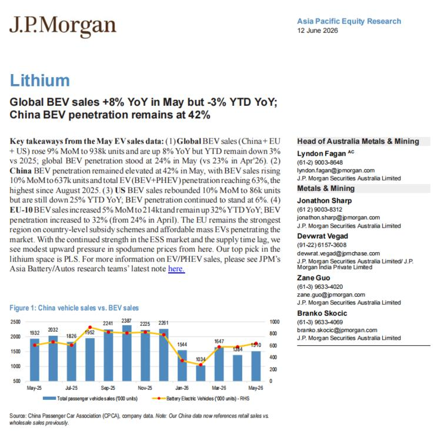
一句话核心：摩根大通（JPM）的锂行业报告——全球电动车 5 月回暖，但区域分化巨大（欧洲最强、美国最弱、中国渗透率见顶在 42%）；叠加储能需求强、供给跟不上，锂价（锂辉石）开始有温和上涨压力。
背景与关键数据（把术语翻译成大白话）：
- BEV = Battery Electric Vehicle，纯电动车（只有电池、没有发动机）。PHEV = 插电混动。新能源车 = BEV + PHEV。
- 渗透率 = 某类车占总销量的比例。中国"纯电渗透率 42%、总新能源渗透率 63%"意思是：每卖 100 辆车，42 辆是纯电，再加上插混总共 63 辆是新能源——燃油车在中国已经是少数派。
- YoY（同比） = 和去年同月比；YTD（年初至今） = 今年 1 月到现在累计。所以"5 月 +8% YoY 但 YTD −3%"= 当月在回暖，但今年累计仍不如去年。
- ESS = Energy Storage System，储能系统（大型电池电站）。储能和电动车抢同一批锂电池原料，所以储能强会拉动锂需求。
- 锂辉石（spodumene） = 提炼锂的主要矿石原料，它的价格是锂产业链最上游的风向标。
图片解读：这是 JPM 报告首页（2026 年 6 月 12 日，亚太股票研究）。
- 标题印证正文："Global BEV sales +8% YoY in May but −3% YTD YoY; China BEV penetration remains at 42%"。
- 下方 Figure 1：China vehicle sales vs. BEV sales（中国乘用车 vs 纯电销量）。蓝色柱子是月度乘用车总销量（千辆），从 May-25 的 1932 一路到峰值 2387（Nov-25 前后），再回落到 Jan-26 的 1544、May-26 的 1510——年末旺季冲高、年初回落的典型季节性。橙色折线（右轴）是纯电销量，跟着柱子起伏，年初探底（1034 那个低点）后回升。
- 来源：中国乘联会（CPCA）。注意小字提示：中国数据是零售口径（卖给消费者），不是批发口径。
为什么重要 / 含义：
- 对锂/资源股：JPM 给的逻辑是"需求（车 + 储能）回暖 + 供给调整滞后 → 锂价温和上行"。锂价从 2022 年高位暴跌后趴了很久，任何"见底回升"的信号对锂矿股、电池股都是催化剂。报告点名看好的标的是 PLS（Pilbara Minerals，澳洲锂矿）——这正好是用户 IBKR 里持有的 PLTR 之外、Jason 体系里资源板块的一类。
- 对车企/区域配置：美国纯电只有 6% 且还在跌，欧洲却 +32%，说明补贴政策和车型供给决定一切。投资上"买电动车"不能一刀切，要看区域。
延伸知识：
- 零售口径 vs 批发口径：批发=车厂卖给经销商，零售=经销商卖给最终消费者。批发可能"压库存"虚高，零售更反映真实需求。看汽车数据要分清是哪个口径。
- 上游定价的"鞭梢效应（牛鞭效应）"：终端需求小幅波动，传导到最上游的原材料（锂矿）会被放大。所以锂价波动远比电动车销量波动剧烈——这也是为什么资源股弹性大、风险也大。
帖 3 ｜13:35 ｜#扯淡 ｜利率 × 财务自由：利率如何"控制人的行为"
帖子原文：
管理层看这张表，和普通人看这张表的思考是不一样的。控制利率，也能控制人的行为。#扯淡
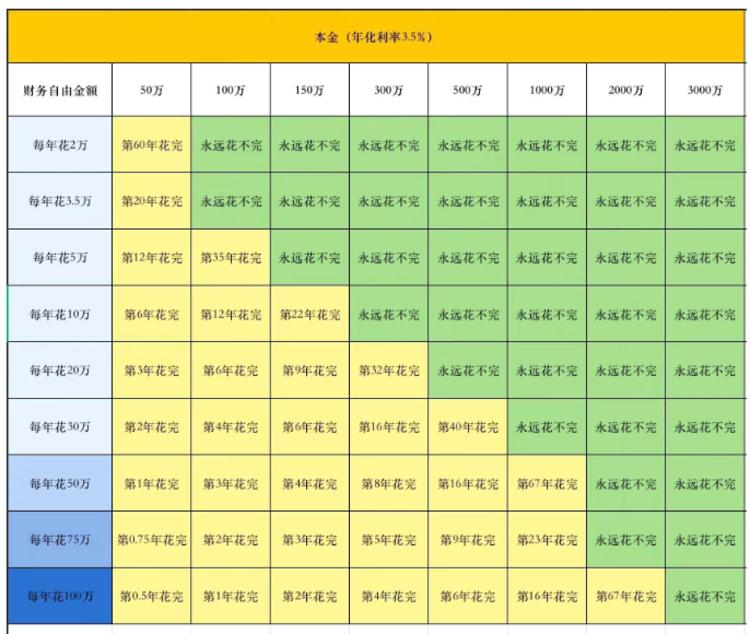
一句话核心：一张"靠本金吃利息能撑多少年"的表，引出一个深刻的点——央行调利率，本质上是在调每个人的消费、储蓄、冒险意愿。
图片解读：表格假设年化利率 3.5%。
- 纵轴（行）= 每年花多少钱，从"每年花 2 万"到"每年花 100 万"。
- 横轴（列）= 本金有多少，从 50 万到 3000 万。
- 单元格 = 在这个本金 + 这个花销下，钱多少年花完，或者"永远花不完"（绿色，意味着利息收入 ≥ 支出，本金不动）。
- 规律：绿色（永远花不完）的分界线，正好是"年支出 ÷ 本金 ≤ 3.5%"。比如本金 100 万、年花 3.5 万正好踩线（永远花不完）；年花 5 万就只能撑 35 年。本金越大、花得越省，越容易实现"躺着吃利息"。
为什么重要 / Jason 想说什么：关键在"控制利率，也能控制人的行为"。
- 利率高（比如这张表如果换成 5%）→ 同样本金能"永远花不完"的人变多 → 大家更愿意存钱吃利息、不敢冒险（钱躺着就有不错回报，何必投股票、创业、消费？）。
- 利率低（比如降到 1%）→ 靠利息根本不够花 → 逼着人把钱拿去投资、消费、承担风险找更高回报。这就是央行降息"刺激经济"的微观机制：不是命令你花钱，而是让"不花钱"变得不划算。
- 所以"管理层"（决策者）看这张表，看到的是一根调节全社会风险偏好的杠杆；普通人看到的只是"我要存多少才能退休"。
延伸知识：
- 金融压抑（Financial Repression）：政府长期把利率压到低于通胀，让储户实际购买力慢慢缩水，等于"温水煮青蛙"地把居民储蓄转移出去（去还政府债务、去投实体）。这正是这张表背后的政策含义——低利率时代，"现金为王"反而最吃亏。
- 4% 法则：欧美退休理财有个经验法则，本金的 4% 是大致可持续的年提取率。这张表用 3.5% 利率，逻辑同源：你的"安全提取率"不能超过资产的长期回报率，否则本金迟早见底。
帖 4 ｜13:31 ｜#金融 ｜存款搬家：雷声大、雨点小
帖子原文：
兴业：2026 年一季度，银行存款到期规模创近年新高，由于长期限存款合约时长多为 2 年、3 年，从时间线上看，恰好对应在 2025-2026 年期间集中到期。由于最近两年存款利率持续下行，年初市场普遍担忧一季度集中到期的存款将面临大额搬家的风险。从实际情况来看，一季度居民端定期存款的搬家规模不大。存款搬家叙事的确在发生，但故事并非市场年初所预期的"定存到期后转投非银"。居民与企业虽对长期存款存在一定的收益诉求，但对风险的厌恶似乎更高。因而，高息到期存款最终还是选择了接受低息续作。搬家的资金，多为用途更加灵活的活期存款。往后看，2026 年二至四季度，定期存款的到期压力同样较大，不过，我们倾向于大部分资金的最终归宿，依旧是定期存款续作，银行的负债端稳定性不会随定存集中到期而动摇。#金融
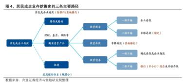
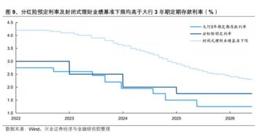
一句话核心：市场年初担心"一大批高息定存到期后，钱会大举撤出银行去买理财/基金"，但实际数据显示——大部分人怕风险，宁愿接受更低的利率继续存定期，存款没怎么搬家。
背景与关键数据：
- 存款搬家：指居民/企业把银行存款取出来，转去买理财、基金、保险等"非银"产品（非银 = 非银行金融机构）。为什么有这担忧？因为 2023-2024 年存款利率一路下调，2 年前、3 年前办的高息定存（比如 3%+）现在到期，再续存利率可能掉到 1.x%，落差大，理论上人会想"搬走"。
- 但兴业的结论是：搬家规模不大。原因是"对风险的厌恶 > 对收益的诉求"——大家宁可少赚也不想亏，于是"高息到期 → 低息续作"。真正搬走的多是活期存款（本来就是灵活资金）。
- 展望：2026 年 Q2-Q4 到期压力依然大，但兴业认为多数仍会续存，银行的负债端是稳的（负债端 = 银行的资金来源，主要就是存款）。
图片解读：
- 图 4「居民或企业存款搬家的三条主要路径」（兴业证券）：一张流程图，左边是"居民或企业存款"，向右分出三条去向——大致是①购买理财/基金等资管产品、②转向保险类产品、③仍留在银行体系（活期/续作）。它在告诉你钱"理论上能去哪"。（图较小，看大致结构即可。）
- 图 9「分红险预定利率及封闭式理财业绩基准下限均高于大行 3 年期定期存款利率（%）」：三条线随时间下行——大行 3 年定存利率（最低，约 1.x%）、分红险预定利率上限、封闭式理财业绩基准下限（都高于定存）。这张图是在解释"搬家"的诱因：替代产品的收益确实比定存高，所以理论上有吸引力——但居民还是没大规模搬，说明安全感压倒了那点利差。
为什么重要 / 含义：
- 对银行股：存款不外流 = 银行资金成本可控、负债稳定，对银行净息差（NIM）和股价是利好（市场最怕的是"存款流失 + 揽储成本上升"）。
- 对宏观：居民"宁可低息也要安全"反映风险偏好极低、对未来收入预期谨慎——这和后面几帖"信贷弱、不愿加杠杆"完全一致，是当前中国经济的核心心态。
延伸知识：
- 银行的资产端 vs 负债端：负债端=钱从哪来（存款、同业拆借）；资产端=钱用到哪（放贷、买债）。银行赚的是两端利差。存款稳定意味着负债端这块地基没塌。
- 风险厌恶（Risk Aversion）：经济学里指人对"确定的少"比"不确定的多"更偏好。当一个社会整体风险厌恶上升，钱就会涌向存款、国债等"safe asset（安全资产）"，压低这些资产的收益率——这也是中国 10 年国债收益率持续走低的微观基础（见帖 5）。
帖 5 ｜13:27 ｜#金融 ｜货币的"大切换"：从外生到内生
帖子原文：
中金：尽管 5 月中国信贷投放不足不利于货币派生，但是人民币汇率偏强推动企业结汇需求释放，这持续对广义货币增长形成支撑。后续来看，高顺差背景下企业结汇支撑仍在，我们预计下半年广义货币增速有望持续高于社融增速。
美元流动性扩张的引擎正在经历一场"大切换"。随着通胀从潜伏转向显现、主张缩表的新任美联储主席沃什上任，疫情后由美联储扩表与财政赤字共同驱动的外生货币时代或将步入尾声。与此同时，由 AI 资本开支驱动的内生货币扩张已然成型——流动性的引擎正从政策端走向实体端。内生货币扩张一方面增强经济韧性、加深通胀粘性，另一方面也推动资金从传统的房地产与消费领域，加速流向回报预期更高的科技前沿。未来，资产表现或继续分化：单纯依赖外生流动性驱动的资产将承受压力，而代表先进生产力方向的资产，则有望在内生货币的扩张中乘势而起。#金融
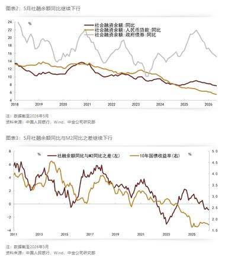
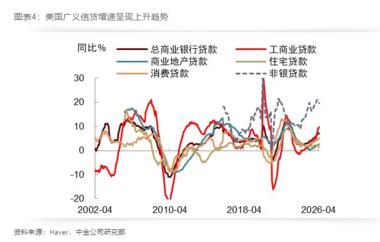
一句话核心：中金抛出一个大框架——美元流动性的"发动机"正在换挡：从过去靠美联储印钞 + 政府赤字（外生），切换到靠 AI 投资自己创造的信贷扩张（内生）；这会导致资产剧烈分化，科技资产受益、纯靠放水驱动的资产承压。
背景与关键数据（这帖术语最多，重点拆）：
- 货币派生：银行放一笔贷款，钱会在经济里循环、被反复存贷，"创造"出更多货币。信贷少 → 派生少 → 广义货币（M2）增长就慢。
- 结汇：出口企业拿到美元，到银行换成人民币。人民币偏强 + 高顺差时，企业更愿意结汇，这个过程会投放人民币，所以即使国内信贷弱，结汇也能托住 M2。
- 广义货币 vs 社融：M2=全社会的钱有多少（存款口径）；社融=实体经济从金融体系拿到了多少融资（贷款 + 债 + 股等）。"M2 增速 > 社融增速"说明钱在变多，但没有充分流向实体放贷——钱有点"淤积"。
- 外生货币 vs 内生货币（本帖灵魂）：
- 外生=由政策"从外部塞进来"的钱：美联储扩表（QE 印钞买债）、政府财政赤字发钱。疫情后几年就是这种模式。
- 内生=由实体经济自身需求"从内部长出来"的钱：企业为了投资（比如 AI 数据中心、芯片厂）去借钱，银行放贷创造存款。
- 中金说："主张缩表的**沃什（Kevin Warsh）**当美联储主席"——这是个鹰派信号（缩表 = 收水），意味着外生放水时代要结束；接棒的是 AI 资本开支（capex） 驱动的内生扩张。
- 通胀粘性：通胀一旦起来就不容易降下去。内生扩张（实体真的在花钱投资）比单纯放水更能推高且"黏住"通胀。
图片解读：
- 图表 2「5 月社融余额同比继续下行」（中金）：三条线 2018→2026——社融余额同比（总量）、人民币贷款同比、政府债券同比，整体都在往下走，确认"实体融资需求在收缩"。
- 图表 3「5 月社融余额同比与 M2 同比之差继续下行」：左轴是"社融−M2"的差值，右轴是 10 年期国债收益率，两者同向。差值往下 = M2 跑赢社融（钱多但没去放贷），同时国债收益率创新低——钱多、需求弱、避险，全压在债市上。
- 图表 4「美国广义信贷增速呈现上升趋势」：2002→2026，美国总商业银行贷款、工商业贷款、商业地产、住宅、消费、非银贷款等，近期整体抬头。这是"美国内生信贷（实体借钱）在加速"的证据，呼应"内生货币时代"的判断。
为什么重要 / 含义：这是今天最有投资指导意义的一帖。如果中金对——
- 科技/AI 产业链（先进生产力）：内生货币会优先流向这里，是长期受益方向。这与 Jason 重仓半导体/光通信/AI 的整体思路一致。
- 房地产、传统消费、纯流动性驱动的资产（如部分高估值"故事股"、对放水最敏感的板块）：承压。
- 债市：需求弱 + 避险 → 收益率易下难上，利好债券价格，但也意味着"资产荒"会逼着资金去抢少数优质资产。
延伸知识：
- QE / QT：QE（量化宽松）=央行印钱买债、放水；QT（量化紧缩 / 缩表）=央行卖债 / 不再续作、收水。沃什主张 QT，是"鹰派"代表。
- "资产荒"：当安全资产收益率被压得很低、实体又缺好项目，大量资金追逐少数优质资产，把它们价格抬得很高。这是理解当下债牛、以及部分龙头股估值高企的关键词。
帖 6 ｜13:18 ｜#TAX ｜基建投资企业（城投）：越来越靠"补贴"过日子
帖子原文：
中诚信：基础设施建设投资企业 2025 年度财务报表分析，盈利对政府补助和投资收益依赖程度仍较高。各省份基投企业普遍面临较大的经营压力，亏损企业和省份数量保持增长。#TAX
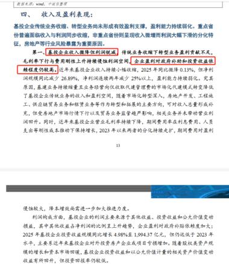
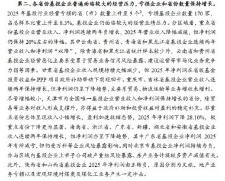
一句话核心：评级机构中诚信对"城投平台"的 2025 年报做体检，结论不乐观——这些公司主业不怎么赚钱，利润很大程度靠政府补贴和投资收益撑着，而且亏损的公司和省份越来越多。
背景与关键数据：
- 基投企业 / 城投平台：地方政府设立的投融资公司，负责修路、建桥、搞园区等基础设施。它们是地方政府隐性债务的主要载体，所以一直是债券市场和"防风险"的焦点。
- 核心问题："盈利对政府补助和投资收益依赖程度高" = 主营业务（基建运营）本身赚不到钱，账面利润靠两块撑：①政府直接发补贴、②投资收益（卖资产、股权分红等非经常性收入）。这种利润"含金量低"，不可持续。
- 图片正文里还能读到几个细节：基投企业传统业务收缩、转型业务尚未形成有效盈利支撑；2025 年净利润同比下滑（图中提到约 −25%、净利润规模 1994.37 亿元量级）；2025 年亏损基投企业（市）数量上升至 5 个，占样本 8.3%；云南、贵州、青海、黑龙江等省压力突出。
图片解读：两张都是中诚信报告的文字截图（不是图表）。
- 第一张（post6_img1）："四、收入及盈利表现"——红框标出三句要点：基投企业收入增速放缓 / 转型业务盈利贡献不足、毛利率下半年承压、企业靠政府补助和投资收益依赖度仍较高。
- 第二张（post6_img2）："第二、各省份基投企业盈利亏损"——逐省点评，指出亏损省份和企业数量上升，重点省份（云南、贵州、青海、黑龙江等）持续承压。
为什么重要 / 含义：
- 对城投债投资者：这是信用风险的警示。主业不赚钱、靠补贴续命，意味着一旦地方财政吃紧、补贴减少，部分弱资质城投的偿债能力会恶化。省份分化是关键词——强省（江浙粤）和弱省（云贵青等）的城投，信用天差地别，不能一概而论。
- 对宏观：城投是过去基建驱动增长模式的产物。它的"造血能力"下降，说明旧增长引擎（土地财政 + 基建)在熄火，这正是帖 5"资金从房地产/传统领域流向科技前沿"的另一面。
延伸知识：
- 隐性债务：不直接体现在政府资产负债表上、但实际由政府兜底的债务，城投债是典型。中国近年"化债"（化解地方债务）就是在处理这块。
- 利润质量：看一家公司利润，要区分"经常性损益"（主业持续赚的）和"非经常性损益"（卖资产、补贴等一次性的）。靠后者撑起来的利润，PE 估值要打折——这条原则对所有投资标的都适用。
帖 7 ｜12:53 ｜#金融 ｜5 月信贷：居民还在"还钱"，企业靠票据撑
帖子原文：
长江：5 月当月新增信贷 0.5 万亿，同比 −0.1 万亿，其中居民部门新增信贷依然为负，企业部门在票据冲量下新增为正。
居民短贷和中长贷新增均为负值，仍然是净偿还状态，且同比均为少增，这与一线城市二手房成交火热的情况有所背离，一或是因为成交以小户型、公积金贷款为主，而公积金贷款记入委托贷款，且在收入、现金流前景尚未明显改善之下，刚需买房或降低信贷杠杆、提高自付比例，二或是当下新房销售仍有一定拖累，三或是在高油价影响下，居民消费需求有所下降。
企业短贷、中长贷同比均少增，票据新增 0.6 万亿。本月信贷表现依然较弱，一方面高油价压制生产动能，另一方面新旧经济融资需求一强一弱，叠加地方换届和正确政绩观的指引，投资、信贷和政府债均有走弱。6 月票据利率依然处于历史低位，预计信贷或仍有承压。
往后看，今年政府债额度增量有限，叠加年内社融同比基数将一路提升至 7 月，未来社融增速或持续面临下行压力，年末或下行至 7.5% 左右；宏观流动性方面，M1 指标这两年因基数波动较大，后续或因基数原因而面临一定下行压力；预计货币政策仍将以呵护为主，适度宽松、流动性充裕的主基调不变。#金融
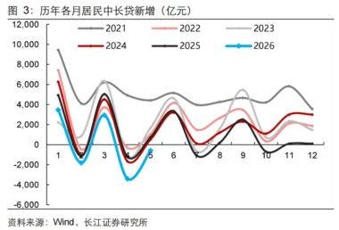
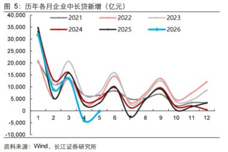
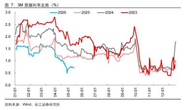
一句话核心：5 月信贷很弱——老百姓不但不借钱、还在提前还贷（净偿还），企业靠"票据冲量"才让数据为正；这是经济内生需求疲弱的直接证据，货币政策会继续偏宽松托底。
背景与关键数据：
- 新增信贷 0.5 万亿、同比 −0.1 万亿：5 月银行新放出去的贷款只有 5000 亿，比去年同期还少 1000 亿。
- 居民部门为负（净偿还）：居民这个月还的贷比新借的多。短贷（消费贷、信用卡）+ 中长贷（主要是房贷）都是负的。
- 背离之谜：奇怪的是一线城市二手房成交很火，按理房贷该多，但房贷数据却是负的。长江给了三个解释：①成交以小户型 + 公积金贷款为主，而公积金贷款记在"委托贷款"里、不算进这个口径；②刚需购房者降杠杆、提高首付（不愿多借）；③新房销售拖后腿；外加高油价压制了消费。
- 企业靠票据冲量："票据"（票据融资）是银行用来凑贷款规模的工具，期限短、利率低。企业真正的短贷、中长贷（反映投资意愿）都同比少增，只有票据多了 0.6 万亿——说明真实投资需求不足，银行只能拿票据"凑数"。
- 6 月票据利率历史低位：票据利率越低，越说明银行"抢票据凑规模"、实体贷款需求越差（这是市场判断信贷强弱的高频指标）。
- 展望：政府债增量有限 + 基数抬升 → 社融增速继续下行，年末或到 7.5% 左右；货币政策"以呵护为主、适度宽松"。
图片解读（三张都是长江证券的历年同月对比图，横轴是 1-12 月，不同颜色是不同年份，蓝色是 2026）：
- 图 3「历年各月居民中长贷新增（亿元）」：2026 年（蓝线）年初深度为负（最低到 −3000 亿左右），明显低于 2021-2025 各年同期——居民房贷极度疲弱、提前还贷严重。
- 图 5「历年各月企业中长贷新增（亿元）」：2026 年（蓝线）在 5 月附近掉到负值，是各年里最差的——企业中长期投资意愿同样很弱。
- 图 7「3M 票据利率走势（%）」：2026 年（蓝线）全程在历史低位（约 0.5%–1%），远低于 2023-2025 各年——再次印证"靠票据凑规模、实体需求差"。
为什么重要 / 含义：
- 这帖是帖 5（社融下行）、帖 4（存款不搬家、不加杠杆）的数据落地。三帖合起来描绘的是同一件事：中国居民和企业都在"去杠杆 / 防御"，信贷需求疲弱。
- 对市场：信贷越弱，降息降准、宽松托底的预期越强——对债市是利好（收益率下行），对股市是"政策底"逻辑（坏数据 = 好政策预期）。
- "正确政绩观"：指地方官员不再盲目上项目、举债搞 GDP，这会主动压低投资和信贷——是理解"为什么宽松了信贷还起不来"的政策背景。
延伸知识：
- 票据冲量：月末/季末银行为完成信贷考核指标，大量买入低息票据充数。看到"票据多增 + 企业中长贷少增"，要警惕信贷数据"虚胖"。
- 社融的基数效应：增速 = 今年 / 去年。去年下半年基数高，今年同比增速自然被压低——所以"年末降到 7.5%"里有一部分是数学问题，不全是经济进一步恶化。读宏观数据要会剔除基数干扰。
帖 8 ｜12:48 ｜#金融 ｜霍尔木兹海峡或重开：油价、通胀与美联储
帖子原文：
zerohedge：美伊、巴基斯坦陆续放风，双方可能会在下周 G7 领导人峰会期间签署协议，重新开放霍尔木兹海峡。该临时和平协议将使美国和伊朗将停火延长约两个月，并就伊斯兰共和国的核计划展开进一步谈判。美国石油价格跌破 85 美元，通胀压力的担忧缓解，交易员将美联储加息押注推迟到明年。美国消费者信心在六月初首次在四个月内上升，标普 500 指数延长了本周的涨幅。#金融
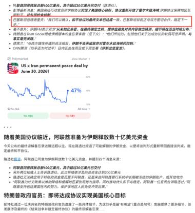
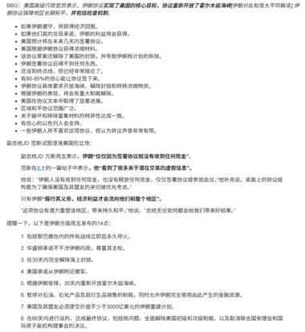
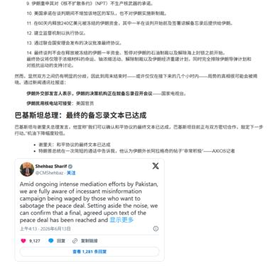
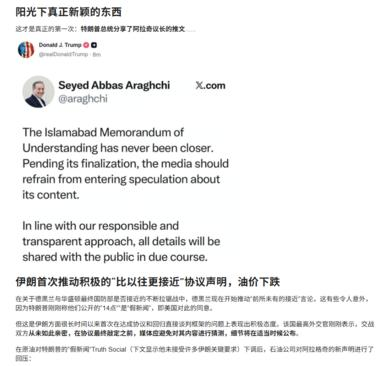
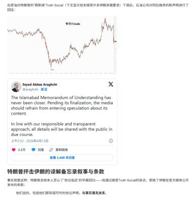
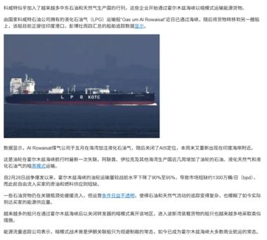
一句话核心：地缘缓和的大新闻——美国、伊朗、巴基斯坦放风，可能在 G7 峰会期间签临时协议重开霍尔木兹海峡、延长停火；结果是油价跌破 85 美元 → 通胀担忧缓解 → 美联储加息预期推后 → 美股上涨、消费者信心回升。
背景与关键数据：
- 霍尔木兹海峡（Strait of Hormuz）：波斯湾出海口，全球约 1/5 的石油、大量 LNG 都从这里走，是世界最重要的"能源咽喉"。一旦被封锁，油价会暴涨；重开则相反。
- 逻辑链（这是宏观交易的经典传导）：地缘风险下降 → 原油供给担忧缓解 → 油价跌（跌破 85 美元）→ 能源是通胀的大头，油价跌 → 通胀预期降 → 美联储没必要急着加息 → 加息预期推迟到明年 → 利率预期下降利好股票 → 标普 500 上涨 + 消费者信心回升。
- 注意呼应帖 5/帖 7：油价下行也帮中国缓解"高油价压制生产和消费"的压力。今天多帖都点了"高油价"，这帖给了它可能转向的拐点。
图片解读（6 张都是这条新闻的配图/截图，用来佐证消息）：
- post8_img1：新闻正文 + 一个 Polymarket 预测市场截图，问"US x Iran permanent peace deal by June 30, 2026?（6 月 30 日前美伊达成永久和平协议？）"，显示 Yes ≈ 47%——市场对"真能签成"还是半信半疑。
- post8_img2 / img3：协议条款细节的文字（停火延长、核计划谈判、释放数十亿美元伊朗资金等），以及巴基斯坦总理 Shehbaz Sharif 的推文，称和平协议"最终文本已达成"。
- post8_img4 / img5：特朗普 Truth Social 截图 + 伊朗外长 Araghchi 的推文（"The Islamabad Memorandum of Understanding has never been closer / 伊斯兰堡谅解备忘录从未如此接近"），并配 WTI 原油价格走势图——可见油价在消息后明显下跌。
- post8_img6：一艘 LPG 运输船（Al Rowaisat 号） 的照片，配文讲该船关闭 AIS 信号、改道印度方向——属于"海峡局势变化"的实地佐证细节。
为什么重要 / 含义：
- 对大类资产：这是典型的"风险偏好开关"事件。地缘缓和 = 油价↓、通胀↓、利率预期↓、股票↑、避险资产（黄金）可能回落。用户 IBKR 里持有黄金/白银期货（1OZ、SIC）和 GOOG，这条新闻方向上对贵金属偏空、对成长股偏多——值得盯紧 G7 峰会能否真签成。
- 不确定性：Polymarket 才 47%，说明"放风 ≠ 落地"。这类消息常有反复，油价可能宽幅波动。Jason 发出来更多是提示"拐点信号 + 待验证"，不是确定性结论。
延伸知识：
- 油价 → 通胀 → 利率"传导链"：能源价格是 CPI 里波动最大、传导最快的一项。所以做宏观的人盯油价，本质是在抢先判断通胀和央行动作。
- 预测市场（Prediction Market）：像 Polymarket 这种用真金白银下注事件结果的平台，价格可被解读为"市场认为的发生概率"。它比民调/新闻更难"嘴炮"，但也会被情绪和流动性扭曲，当参考、别当真理。
- AIS 关闭：船舶自动识别系统。油轮"关 AIS、改道"常被用来观察制裁、走私或地缘异动——是地缘交易者的另类数据（alternative data）。
今日全图索引
| 帖号 | 时间 | 主题 | 标签 | 图片文件 |
|---|---|---|---|---|
| 帖 1 | 14:03 | 韩国出口 = 半导体领先指标 | #金融 | post1_img1.jpg |
| 帖 2 | 13:40 | 全球电动车与锂（JPM 报告） | #经济数据 | post2_img1.jpg |
| 帖 3 | 13:35 | 利率 × 财务自由表（控制行为） | #扯淡 | post3_img1.jpg |
| 帖 4 | 13:31 | 存款搬家：雷声大雨点小（兴业） | #金融 | post4_img1.jpg, post4_img2.jpg |
| 帖 5 | 13:27 | 货币大切换：外生→内生（中金） | #金融 | post5_img1.jpg, post5_img2.jpg |
| 帖 6 | 13:18 | 城投企业盈利弱、靠补贴（中诚信） | #TAX | post6_img1.jpg, post6_img2.jpg |
| 帖 7 | 12:53 | 5 月信贷弱、居民净偿还（长江） | #金融 | post7_img1.jpg, post7_img2.jpg, post7_img3.jpg |
| 帖 8 | 12:48 | 霍尔木兹或重开、油价跌（zerohedge） | #金融 | post8_img1–6.jpg |
今日学习小结（给跟读者）
把今天 8 帖浓缩成 4 个可以带走的判断：
- 中国：需求弱、不加杠杆、流动性宽松。存款不搬家、居民净还贷、企业靠票据凑数、社融下行——一致指向"防御心态"，货币政策只会更呵护（利好债、利好"政策底"逻辑）。
- 全球货币逻辑在换挡：美联储转鹰（沃什缩表）压外生放水，但 AI 资本开支接棒内生扩张。结论是资产分化——科技/先进生产力受益，纯放水驱动的资产承压。
- 半导体景气仍向上：韩国出口暴涨是同步佐证；电动车/锂出现"需求回暖 + 供给滞后 → 锂价温和上行"的边际变化。
- 地缘缓和是新变量：霍尔木兹若重开 → 油价跌 → 通胀缓 → 加息推后 → 股涨。但只有 47% 概率落地，盯 G7 峰会结果。
注：本报告内容为对 Jason 不跪公开帖子的转写与解读，仅供学习参考，不构成任何投资建议。